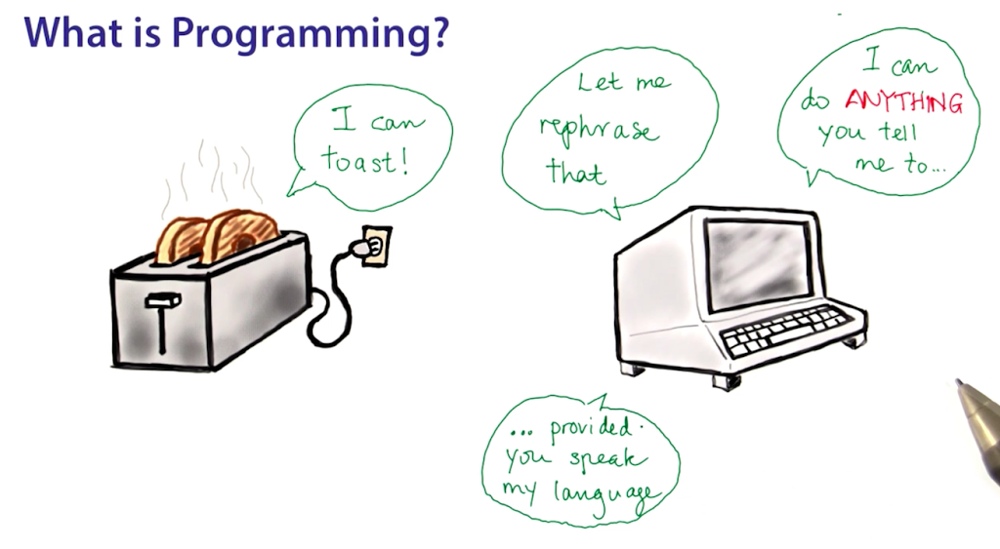

Before starting we are going to know something about this programming world
“Computer programming” (often shortened to programming) is a process that leads from an original formulation of a computing problem to executable computer programs. Programming involves activities such as analysis, developing understanding, generating algorithms, verification of requirements of algorithms including their correctness and resources consumption, and implementation (commonly referred to as coding) of algorithms in a target programming language.
The computer which you use is just like a “blank box”. It won’t be able to perform any kind of operations on its own. It has to be given a set of instructions to be able to carry out any operations. That “set” of instructions is known as “Programs”. Thus “Computer Programs” tell the computer about what action it has to perform, and obviously this set of instructions has to instructed by the users.
Like the human beings who can speak and understand instructions in many different languages(for eg:- English, Hindi, French, Spanish, etc) , the computer also can perform operations instructed in many different programming languages. They are just tools to make the computer perform a specific task.
Basically programming languages are of three types:
1. Machine Level Language
2. Assembly Level Language
3. High Level Language
The computer by default understands MLL which is in form of binary digits i.e. "0" and "1", on the other hand the mordern programming languages are based on HLL, so we use compiler or interpreter to convert our codes into computer readable format.
Computer Programming has become the most sought after passion, hobby, and job. It is said that “Every person must know how to code, because it makes you think how a work is done.” In this digital age there is a major demand for computer programmer. It has become the so called “Evergreen field”.
Yes it is true that everyone is programming. Google, Facebook, Amazon, Instagram, Reddit, Quora, Medium, Twitter, Paytm, Flipkart, Rocket Industries, NASA, etc , almost everything surrounding you is the outcome of computer programming. It has become the basic need of the life. Developers, Sports Programmers, Web Designer, Graphic Designer, Gaming and Animation, Data Scientists, etc are all the subsets of Programmers. Programming is a very vast field. The demand for programmers will keep on rising.
By here, you have gained enough knowledge about world of programming and you are ready to begin your journey as a programmer. Tap the courses button on top or clickhere